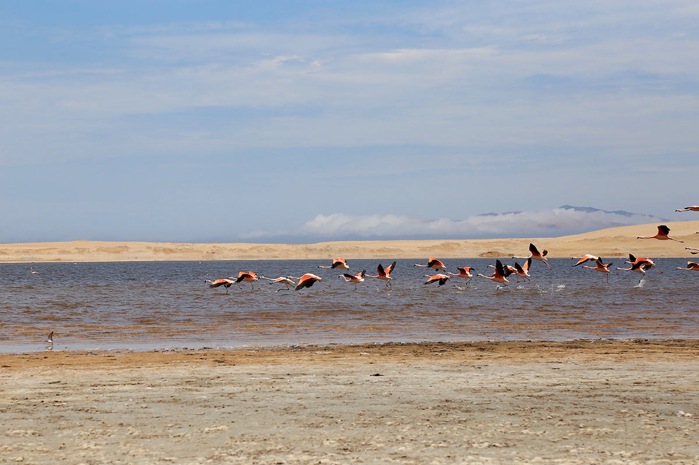
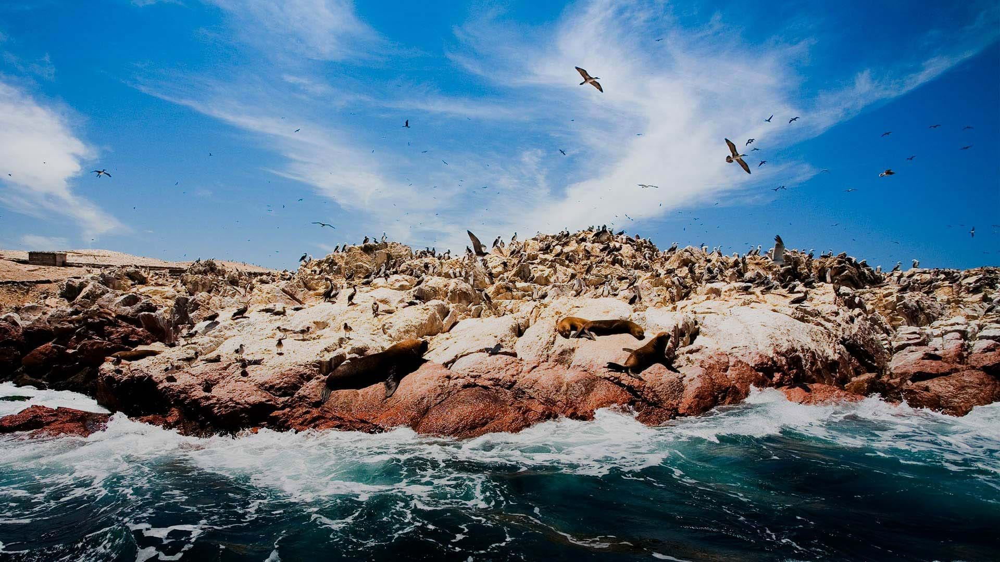
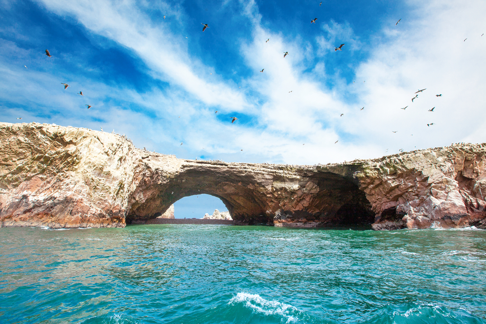

Om 07:00 vertrekt het hele gezelschap per privévervoer vanuit Lima richting Paracas — een rit van 3,5 uur. Na aankomst en inchecken in het hotel vertrekt de groep om 12:30 voor de privétour van het Paracas Reservaat.
Over wegen van zout rijden we door een spectaculair landschap vol kleurrijke woestijn en 's werelds meest visrijke oceaan. Flamingo's in een zoutmeer, het interpretatiecentrum, de baai van Lagunillas — en alles in omgekeerde volgorde om de groepstours te vermijden.



07:45 – Islas Ballestas (2 uur): De "Galápagos van de armen" — zeeleeuwen, Humboldtpinguïns, pelikanen, aalscholvers en humboldtgenten van heel dichtbij. Met wat geluk zie je ook flamingo's of dolfijnen!
10:30 – Snorkelen in het Paracas Reservaat (tot 14:00): Met PADI-gecertificeerde instructeurs duiken we de onderwaterwereld in van Paracas. Volledige uitrusting inclusief, onderwaterfoto's en -video's inbegrepen. Aan het einde wordt een verse ceviche van de geoogste schelpdieren klaargemaakt!
14:30 – Huacachina: De magische oase te midden van tientallen meters hoge zandduinen. Een paar uur vrij om te genieten van dit unieke natuurwonder.
19:30 – Nachtbus Cruz del Sur (VIP klasse) richting Arequipa — aankomst de volgende ochtend om 08:40.